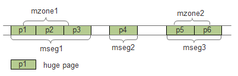

4. Memseg¶
4.1. 概述¶
DPDK把连续的内存段称之为memseg，它的示意图如下：
4.2. 数据结构¶
librte_eal/common/include/rte_memory.h
/**
* Physical memory segment descriptor.
*/
struct rte_memseg {
phys_addr_t phys_addr; /**< Start physical address. */
union {
void *addr; /**< Start virtual address. */
uint64_t addr_64; /**< Makes sure addr is always 64 bits */
};
#ifdef RTE_LIBRTE_IVSHMEM
phys_addr_t ioremap_addr; /**< Real physical address inside the VM */
#endif
size_t len; /**< Length of the segment. */
uint64_t hugepage_sz; /**< The pagesize of underlying memory */
int32_t socket_id; /**< NUMA socket ID. */
uint32_t nchannel; /**< Number of channels. */
uint32_t nrank; /**< Number of ranks. */
#ifdef RTE_LIBRTE_XEN_DOM0
/**< store segment MFNs */
uint64_t mfn[DOM0_NUM_MEMBLOCK];
#endif
} __rte_packed;
4.3. 初始化¶
在rte_eal_hugepage_init(librte_eal/linuxapp/eal/eal_memory.c)中：
for (i = 0; i < nr_hugefiles; i++) {
new_memseg = 0;
/* if this is a new section, create a new memseg */
if (i == 0)
new_memseg = 1;
else if (hugepage[i].socket_id != hugepage[i-1].socket_id)
new_memseg = 1;
else if (hugepage[i].size != hugepage[i-1].size)
new_memseg = 1;
else if ((hugepage[i].physaddr - hugepage[i-1].physaddr) !=
hugepage[i].size)
new_memseg = 1;
else if (((unsigned long)hugepage[i].final_va -
(unsigned long)hugepage[i-1].final_va) != hugepage[i].size)
new_memseg = 1;
if (new_memseg) {
j += 1;
if (j == RTE_MAX_MEMSEG)
break;
mcfg->memseg[j].phys_addr = hugepage[i].physaddr;
mcfg->memseg[j].addr = hugepage[i].final_va;
mcfg->memseg[j].len = hugepage[i].size;
mcfg->memseg[j].socket_id = hugepage[i].socket_id;
mcfg->memseg[j].hugepage_sz = hugepage[i].size;
}
/* continuation of previous memseg */
else{
mcfg->memseg[j].len += mcfg->memseg[j].hugepage_sz;
hugepage[i].memseg_id = j;
}